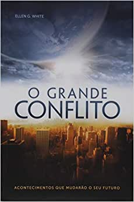

*Clicando na capa do livro você será direcionado para o site de venda


| Título | Autor | Descrição | |
|---|---|---|---|
|  | O Grande Conflito | Ellen G. White | No grande conflito entre o bem e o mal, a impressão que se tem é a de que o mal está levando a melhor. As notícias são desanimadoras - violência, fome, desemprego, doenças, acidentes e outras calamidades estão na ordem do dia. Os meios de comunicação podem lhe dizer o que está acontecendo. Mas este livro revela por quê. E diz também o que você jamais ouvirá no noticiário - o que ainda está por acontecer. Anime-se. A guerra está no fim e você ainda pode escolher de que lado estará quando tudo ter minar. |
|
|
Eventos Finais | Ellen G. White | Todo dia somos sacudidos pelo noticiário das tragédias que assolam o mundo. Muitos estão clamando: "Não aguento mais!". As pessoas querem saber como e quando será o fim dessas coisas. Este livro é uma compilação cuidadosa de informações reveladas por Deus a Ellen White, com o objetivo de apresentar os eventos finais numa sequência lógica, até onde isso foi revelado. É essencial que cada cristão estude esse assunto e se prepare para o maior de todos os eventos: a volta de Jesus. |
|
|
Os Escolhidos. Patriarcas e Profetas - Série Conflito | Ellen G. White | Este é o primeiro volume de uma série de cinco livros adaptados pelos Depositários do Patrimônio Literário White. Seu objetivo é esclarecer as mensagens do Grande Conflito a uma nova geração de leitores. Nesta coleção, você encontrará as grandes verdades publicadas nos volumes originais em um formato mais acessível para os leitores do século 21. Satanás saiu como vencedor no Jardim do Éden - assim ele pensava. Tinha sido bem-sucedido ao convencer um terço dos anjos no Céu a se tornarem inimigos de Deus. Depois conseguiu levar os primeiros seres humanos a desobedecer a Deus. Estava tendo sucesso em seu empreendimento. A partir de então, a dor, o sofrimento e a morte se alastrariam pelo mundo. Entretanto, não seria assim para sempre. Um redentor tomaria sobre Si a penalidade que nós seres humanos merecíamos. O próprio Deus Se tornaria "um de nós", mas, sem pecado. Jesus pagaria a sua e a minha pena para que pudéssemos herdar a vida eterna. Um Redentor viria! O plano havia sido traçado antes da criação do mundo. Agora chegara o momento de colocá-lo em ação. Deus escolheu alguns seguidores, imperfeitos, mas dispostos a serem ensinados, a fim de levar a mensagem: Noé, Enoque, Abraão, Jacó, Moisés, Davi e outros. Desde o primeiro dia em que o pecado entrou em nosso mundo, o amor e a graça de Deus têm guerreado contra ele. O que Satanás pensou ser uma vitória, foi na verdade o início da derrota. |